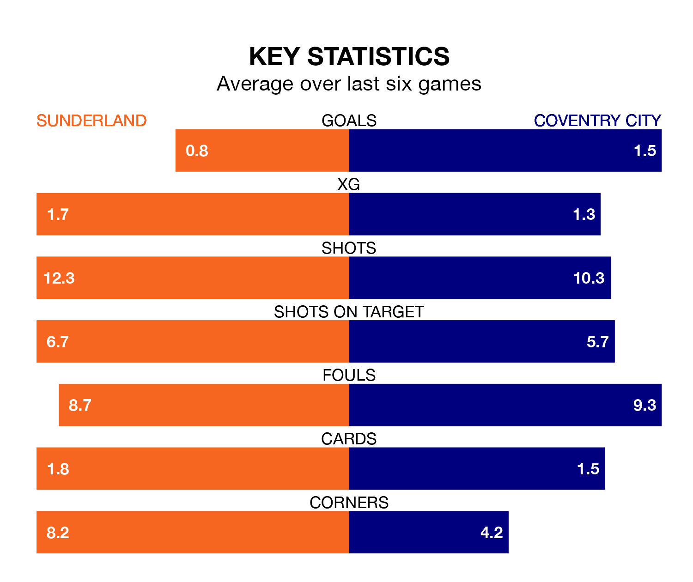

Sunderland host Coventry City on Saturday at the Stadium of Light in the Championship.
In their last league match, on December 16, Sunderland lost to Bristol City 1-0 away.
Coventry drew, 1-1 away at Leeds United, with Bobby Thomas scoring their goals.
In Jack Clarke, Sunderland have one of the league's most on-form strikers so far this season. He has notched 10 goals in 22 appearances, to sit third in the scoring charts.
Coventry's top scorers, with six goals each, are Haji Wright and Matt Godden.
With 28 goals in 22 games so far this season, City are scoring at below the league average rate with 1.3 goals per game. But they are conceding fewer than average too, letting in 25 goals at a rate of 1.1 per game.
The Black Cats, meanwhile, are above average scorers, with 1.5 goals per game, compared to a league average of 1.4. They have conceded 1.1 goals per game.
The home side are seventh in the table after 22 games, of which they have won 10 and drawn three, earning 33 points.
The Sky Blues are eight places behind Sunderland in 15th, with six wins and nine draws putting them on 27 points.
Sunderland are in mixed form in the Championship, with two wins and a draw from their last six games.
With three wins and two draws over that period, the visitors' form is better – they have taken 11 points from 18, compared to the Black Cats' seven.
In the last three years, Sunderland and Coventry have played each other on three occasions. Coventry won one of them and they drew the other.
Their last meeting was on August 26, when they played out a 0-0 draw.
Saturday's match will be refereed by Matt Donohue, who has taken charge of 13 Championship games so far this season, issuing no red cards and booking 51 players. He has awarded two penalties.
The last Sunderland game Donohue refereed was a 2-1 home loss to Huddersfield Town on November 29. He is yet to oversee a match featuring Coventry this season.
Updated: 12:43, 20/12/23